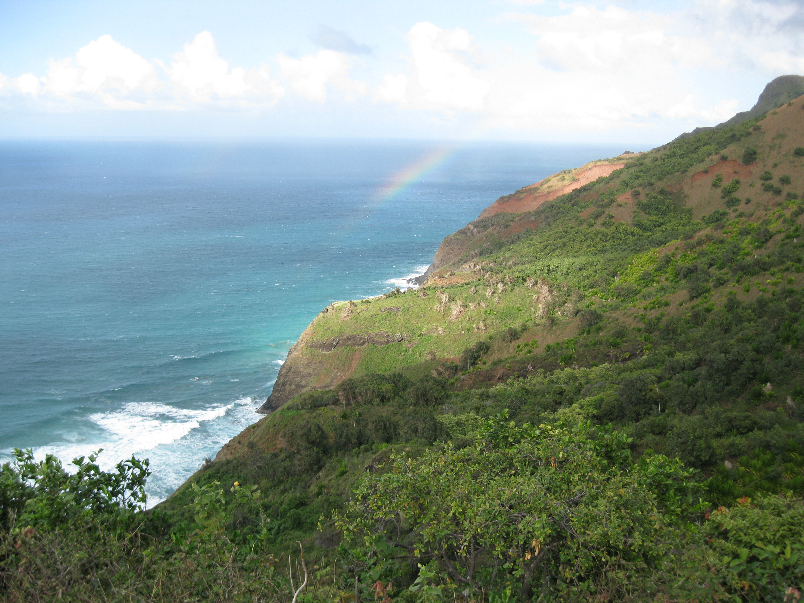

Sleeping three hours, then driving four hours to the airport at night was not the best way to start my first Hawaii trip. But since this was technically my birthday vacation, I quickly forgave myself. After a nap on the Charlotte airport floor and two very long flights, I landed in the Garden Isle, Kauai. I could have stopped over in Oahu, the Traffic Jam Isle, to visit another friend, but decided I wanted to spend six solid days in one place. So I picked Kauai, where two friends from college, Chet and Somer, then lived. The evening I arrived, we relaxed, ate some local fare, and flew a kite on the island’s windy East shore.
Sunday
On Sunday, 2012-02-19, I body-surfed with Chet and Somer on the North Shore and jogged up and down the beach. Later, Chet and I packed our backpacks for our economy but epic trip on the Kalalau Trail to the Napali Coast. He constantly reminded me: pack tight and pack light. Our list included sunblock, cups, hats, a small pot, tents, poles and stakes, a tiny stove, water bottles, iodine tablets, and ultra-thin sleeping bags. We packed oats, musley, milk and chocolate for breakfast; tuna, tortillas, and avocados for lunch; and pasta, quinoa, rice and miso soup for dinner.

Monday
On Monday, Somer dropped me and Chet off at Ke’e Beach, 9am, at the Kalalau Trail head. The densely-wooded, steep, wooden-stepped trail stared down at me, seeming to say “My Sierra Club 8/10 rating will kick your ass. Enter if you dare.” Undeterred, I followed Chet, into the 11-mile charted wilderness. The wide but steep trail looked too much like paradise to be threatening. A steep slope of tropical shrubbery ascended to my left and descended to my right, with a 5-foot wide trail in front of me. A blue sky and bright sun peaked through tall trees above me, and I realized I couldn’t have picked a better week or place to vacation.
At the mouth of the Hanakapiai River, we took off our shoes to cross, since no dry crossing existed. To the left, the Hanakapiai River and Trail ascended the mountain to a different destination campground that Chet and I planned. To the right, the ocean lapped against the river bed rocks. Were were two miles into the hike. After we crossed, Chet told me the bad news first: the trail would have no more wooden steps and would be much more narrow after this. The good news: the wimpy day hikers wouldn’t continue this far on the trail, so the crowd would thin out. Light rain came off and on, making for a muddy trail. Dense tropical shrubbery covered both sides of the trail, so if I slipped and fell off, there would be shrubbery to cling to for dear life. Shortness of breath started to catch up with me, and Chet reminded me to go at my own pace and not hurry trying to follow him. But I tried to keep up anyway. Luckily, this strategy proved not dangerous/assets. but it did prove embarrassing. After another three miles of hurrying through muddy, steep trails, Chet surprising came up behind me. “Chet!” I exclaimed, “Did I actually get ahead of you? I don’t remember passing you!” “That’s because you didn’t,” he answered “Sorry to disappoint you, but I stopped for lunch. I thought you would have seen me stopped!” So Chet had “lunch lapped” me. I couldn’t believe what a slow hiker I was. At mile 8, I found out why this trail was rated so difficult.
It’s called Crawler’s Ledge, aka, The Balcony. Luckily, the trail at this point was dry, the weather sunny, and the wind mild. But a two-foot wide trail with a steep, rocky drop almost straight down several hundred feet into a watery grave made me cling to the side of the mountain and briefly hike sideways. This was February, the off-season. I don’t know how anybody got through here when it was actually crowded. The good news: Crawler’s Ledge took less than five minutes to cross. The bad news: a steep decline in Mile 9, Red Hill, tested muscles in my knees I didn’t know I had. I lost count of how many times I uttered “Motherfu–er, my knees are tired.” Chet couldn’t help laughing. His knees didn’t hurt at all since he was used to these kinds of hikes.
I’d say the first sight of Napali Beach took my breath away, but after ten miles, I was already out of breath. The afternoon sun glared off the water of Napali Beach one mile West. Green Kalalau Valley bordered by cliffs ascended into the misty sky to the South. We would visit that gem tomorrow. Today, our destination was Napali Beach and campground… one mile to go.
After a little more descent through a narrow path cut through tall grassy vegetation, one more sketchy stream crossing, and a little more knee pains and sailor-swearing, we arrived at the campground at 4:30. I bought my hiking boots on the flat Atlantic Coast sandy paradise of Cape Hatteras, so it seemed appropriate they would serve their last on a mountainous Pacific paradise, worn out with holes. My mind flipped back and forth between Iz’s “Hawai’i” and Rodgers and Hammerstein’s “Bali Ha’i.” My musical tastes have multiple personality disorder.
The campground stretched half a mile. Shady trees abounded, and luckily, bugs didn’t. We set up camp, Chet in a hammock and me in a pup tent. We walked through a narrow, rocky path to the immaculate, white beach and clear blue water and did a little body surfing.
After a little more descent through a narrow path cut through tall grassy vegetation, one more sketchy stream crossing, and a little more knee pains and sailor-swearing, we arrived at the campground at 4:30. I bought my hiking boots on the flat Atlantic Coast sandy paradise of Cape Hatteras, so it seemed appropriate they would serve their last on a mountainous Pacific paradise, worn out with holes. My mind flipped back and forth between Iz’s “Hawai’i” and Rodgers and Hammerstein’s “Bali Ha’i.” My musical tastes have multiple personality disorder.
The campground stretched half a mile. Shady trees abounded, and luckily, bugs didn’t. We set up camp, Chet in a hammock and me in a pup tent. We walked through a narrow, rocky path to the immaculate, white beach and clear blue water and did a little body surfing.
We showered at the West End of Camp where a long tube of water less than a foot wide fell from hundreds of feet down a steep cliff. A six-inch thick plastic PVC pipe lay there so we could shower and fill our water bottles. This water source didn’t need iodine cleansing tablets. It descended straight from heaven… or, at least, from a cliff too high for goats or humans to pee or crap in.
With the small gas stove I bought for the trip, and Chet’s wilderness cooking skills, we had a dinner of pasta, miso soup and tea, with a seaweed-salt seasoning I had never tasted, but fell for instantly.

Tuesday
I awoke, needing to take a crap, like most mornings, but unlike most mornings, had to do it in a composting outhouse with no plumbing. After that crappy experience, I went straight back to sleep. After breakfast of muesli, oatmeal and coffee, I slept some more. My tired, aching body insisted. Finally, Chet roused me out of the hammock for a hike into Kalalau Valley. He told me flip-flops were fine. I knew this would pose a problem if we had to climb rocks, but my blistered feet really needed the break from boots.
On a map, the valley is a tilted green bowl on the Northwest shore of Kauai. It has grooved edges as the cliffs and blue veins circulating throughout as the streams. Despite its beauty, it looks very much like a normal forest when you walk through. Palm, fern, bamboo, mango, kiwi, guava, and all sorts of other things can and do grow there. A tropical island mashed up with imported intrusive “haole” flora from the mainland created this literally beautiful mess. Our goal for today was to feast off the fruit trees, but first we asked directions from some campers in the valley who’d set up a makeshift shelter. “Hey, can you tell us the best place to find some mango and guava trees?” Chet asked them. “Yeah, follow that path, then cross the stream…” The fact the guys were naked was apparently totally normal.
“Yeah, some of those people bring in a couple weeks of supplies on kayaks in giant trash bags and just live out here. Then they might go back for more, and end up staying a few months. Clothing optional.” This really was the Garden of Eden on the Garden Isle, I thought. Unfortunately, if I wanted to find naked or half-naked beautiful women, I realized I probably should have gone to Waikiki on the Traffic Jam Isle.
Armed with directions, Chet and I found several mango trees. Reddish-yellow on the inside and outside when ripe, they taste very sweet with almost no tartness. I tried climbing the tree to knock a few out, but didn’t get far. Chet must have been part monkey. Armed with a bamboo stick, he climbed, knocked down at least five, and I caught them or ran after them and collected them if they rolled down the hill. The wind knocked a few bonus mangoes down. The juice quenched my thirst, and the very sweet flesh quenched my hunger. I feasted on mangoes until my face had dry yellow mango mess all over it.
Although mangoes abounded, my favorite but less abundant fruit were the guavas. Green on the outside, red on the inside, guavas tasted mildly sweet compared to mangoes, but had a unique taste I’d never experienced. It’s kind of like tasting the “tropical” flavor candies after you’ve had the regular strawberry and orange flavored ones… hmmm… I’ve never had this, but I love it! Screw the strawberry and orange! On the way back to the campground, I felt like a bath instead of a shower.
After dinner, we fumbled through the dark path to the beach with headlamps, and without the curse of urban light pollution, could barely find the usual constellations with all the extra visible stars. I half-prayed and half-mused silently… God, the Universe, whatever you are… I’d love to shut the noises off in my head and listen to you just like this every day.
Wednesday
After another 12 hours of sleep, Chet body-surfed while I wrote in my journal and caught up with some reading lying in the hammock in a warm but mosquito-free campground. My zen mantra for the day: This life is pretty damn good. Remember that the next time I’m jealous of somebody else’s. We hiked back East to the entrance of Kalalau Valley, picked yet more mangoes, but sick of mangoes, traded a few with a camper for his grapefruit.

I encountered my first traveler’s stone circle. The first traveler starts it in the center, then other travelers gradually expand it out concentrically, adding more stones. According to legend, they bring good luck.
We body-surfed, then walked to the cave at the West End of Napali Beach near the waterfall-shower, where the beach strip ended. A steep cliff ascended to the sky, and I stood there to watch. But Chet pulled me away after less than a minute, warning me falling pebbles might crack our skulls. I didn’t want to know what larger rocks would do, so I didn’t ask.
Thursday
We hiked back the 11 mile trail. A bamboo stick I found as a makeshift hiking pole slightly relieved my aching knees after 3 straight days of hiking. I took the most pictures of all four days, mostly as an excuse to rest. But whatever the reason for frequent stops, it was worth it to stop and smell paradise. The culture shock of no cell phone service at Ke’e Beach and hitchhiking as the norm hit me. Chet reminded me to smile when holding out my thumb as I tried not to think of bad slasher movies. A laid-back couple, Jeff and Joy, picked us up, and Chet paid him for the ride with one organic cigarette. They dropped us off halfway in Hanalei, where the late surf champion Andy Irons once lived. We bought sandwiches and Longboard Kona local beer at the store, ate on the perfect golf-green grass and enjoyed the chill town scenery. We missed the bus, but didn’t care. Jeff and Joy offered to drive us the rest of the way to Anahola, and we took them up on it.
To this day, these are some of my best memories recalled, and one of the best lessons I’ve learned: whatever corner of the Earth or piece of paradise you visit, it is best visited with a good friend.